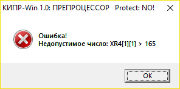
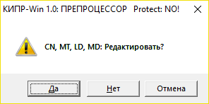
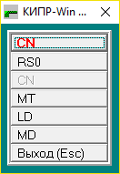
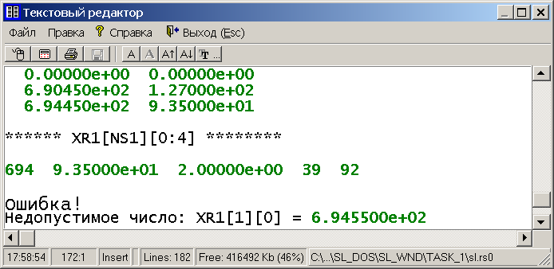

Файл RS0 содержит протокол ввода исходных данных во внешнем представлении. Если в этих исходных данных нет формальных ошибок, то этот файл пользователю не нужен.
Если в исходных данных есть формальные ошибки, то на экране дисплея появляется “Сообщение об ошибке” вида

После нажатия на кнопку “OK” на экране дисплея появится запрос

После нажатия на кнопку “Да” на экране дисплея появится следующее “Меню файлов расчетного случая”

Рис. 1. Меню файлов расчетного случая
Если в этом “Меню ...” выбрать позицию “RS0”, то на экране дисплея появится текст файла RS0 (фрагмент текста файла RS0 изображен на рис. 2).

Рис. 2
Файл RS0 содержит протокол ввода исходных данных до момента обнаружения формальной ошибки в этих данных. Текст с содержанием ошибки может размещаться как сразу за ошибкой, так и вдали от нее (в зависимости от характера ошибки).
После выхода в “Меню файлов расчетного случая” (рис. 1) необходимо выбрать:
На экране дисплея появится текст файла, в котором предположительно обнаружена ошибка.
После анализа ошибки, нахождения и исправления ее в исходных данных необходимо выйти из редактора (например, нажав на клавишу <Esc>).